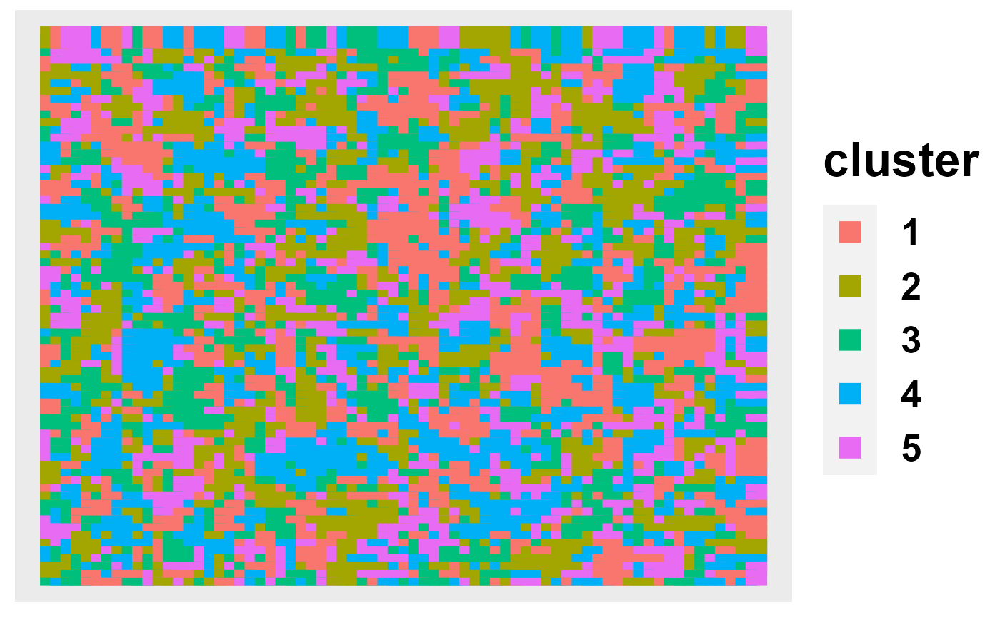

SC.MEB.RmdThis vignette provides an introduction to the R package SC.MEB, where the function SC.MEB implements the model SC-MEB, spatial clustering with hidden Markov random field using empirical Bayes. The package can be installed with the command:
install_github("Shufeyangyi2015310117/SC.MEB")
The package can be loaded with the command:
library("SC.MEB")
#> Loading required package: mclust
#> Warning: package 'mclust' was built under R version 4.0.5
#> Package 'mclust' version 5.4.7
#> Type 'citation("mclust")' for citing this R package in publications.We first set the basic parameter:
library(mvtnorm)
library(GiRaF)
library(SingleCellExperiment)
set.seed(100)
G <- 4
Bet <- 1
KK <- 5
p <- 15
mu <- matrix(c( c(-6, rep(-1.5, 14)),
rep(0, 15),
c(6, rep(1.5, 14)),
c(rep(-1.5, 7), rep(1.5, 7), 6),
c(rep(1.5, 7), rep(-1.5, 7), -6)), ncol = KK)
height <- 70
width <- 70
n <- height * width # # of cell in each indvidualsThen, we generate the true clustering label, 15-dimensional PCA and position of each spot.
X <- sampler.mrf(iter = n, sampler = "Gibbs", h = height, w = width, ncolors = KK, nei = G, param = Bet,initialise = FALSE, view = TRUE)
x <- c(X) + 1
y <- matrix(0, nrow = n, ncol = p)
for(i in 1:n) { # cell
mu_i <- mu[, x[i]]
Sigma_i <- ((x[i]==1)*2 + (x[i]==2)*2.5 + (x[i]==3)*3 +
(x[i]==4)*3.5 + (x[i]==5)*4)*diag(1, p)*0.3
y[i, ] <- rmvnorm(1, mu_i, Sigma_i)
}
pos <- cbind(rep(1:height, width), rep(1:height, each=width))Subsequently, we construct the SingleCellExperiment object based on the above PCA and position.
# -------------------------------------------------
# make SC-MEB metadata used in SC-MEB
counts <- t(y)
rownames(counts) <- paste0("gene_", seq_len(p))
colnames(counts) <- paste0("spot_", seq_len(n))
## Make array coordinates - filled rectangle
cdata <- list()
nrow <- height; ncol <- width
cdata$row <- rep(seq_len(nrow), each=ncol)
cdata$col <- rep(seq_len(ncol), nrow)
cdata <- as.data.frame(do.call(cbind, cdata))
## Scale and jitter image coordinates
#scale.factor <- rnorm(1, 8); n_spots <- n
#cdata$imagerow <- scale.factor * cdata$row + rnorm(n_spots)
#cdata$imagecol <- scale.factor * cdata$col + rnorm(n_spots)
cdata$imagerow <- cdata$row
cdata$imagecol <- cdata$col
## Make SCE
## note: scater::runPCA throws warning on our small sim data, so use prcomp
sce <- SingleCellExperiment(assays=list(counts=counts), colData=cdata)
reducedDim(sce, "PCA") <- y
# sce$spatial.cluster <- floor(runif(ncol(sce), 1, 3))
metadata(sce)$SCMEB.data <- list()
metadata(sce)$SCMEB.data$platform <- "ST"
metadata(sce)$SCMEB.data$is.enhanced <- FALSEHere, we set the basic paramters for our function SC.MEB
platform = "ST"
beta_grid = seq(0,4,0.2)
K_set= 2:10
parallel=TRUE
num_core = 3
PX = TRUE
maxIter_ICM = 10
maxIter = 50Here, we briefly explain these parameters.
‘parallel’ is a logical value specifing the run the model in parallel. The default is TRUE.
‘num_core’ is a interger value for the number of cores used for parallel. The default is 5.
‘PX’ is a logical value for paramter expansion in EM algorithm. The default is True.
‘K_set’ is an integer vector specifying the numbers of mixture components (clusters) for which the BIC is to be calculated. The default is K = 2:10.
‘platform’ is the name of spatial transcriptomic platform. Specify ‘Visium’ for hex lattice geometry or ‘ST’ for square lattice geometry. Specifying this parameter is optional as this information is included in their metadata.
‘beta_grid’ is a numeric vector specifying the smoothness of Random Markov Field. The default is seq(0,5,0.2).
‘maxIter_ICM’ is the maximum iteration of ICM algorithm. The default is 10.
‘maxIter’ is the maximum iteration of EM algorithm. The default is 50.
First, we require to find the neighborhood
Adj_sp <- getneighborhood_fast(as.matrix(pos), cutoff = 1.2)or
Adj_sp <- find_neighbors2(sce, platform = platform)
Adj_sp[1:10,1:10]
#> 10 x 10 sparse Matrix of class "dgCMatrix"
#>
#> [1,] . 1 . . . . . . . .
#> [2,] 1 . 1 . . . . . . .
#> [3,] . 1 . 1 . . . . . .
#> [4,] . . 1 . 1 . . . . .
#> [5,] . . . 1 . 1 . . . .
#> [6,] . . . . 1 . 1 . . .
#> [7,] . . . . . 1 . 1 . .
#> [8,] . . . . . . 1 . 1 .
#> [9,] . . . . . . . 1 . 1
#> [10,] . . . . . . . . 1 .The output ‘Adj_sp’ is a sparse matrix to describe the neighorhood. There two functions are both used to calculate the nrighborhood. The first function ‘getneighobrhood_fast’ is a general function used for general data. However, the second function ‘find_neighbors2’ is a specific function for ST and Visium data.
Finally, we run our model SC-MEB by the function SC.MEB.
fit = SC.MEB(y, Adj_sp, beta_grid = beta_grid, K_set= K_set, parallel=parallel, num_core = num_core, PX = PX, maxIter_ICM=maxIter_ICM, maxIter=maxIter)
#> Starting parallel computing...
str(fit[,1])
#> List of 9
#> $ x : num [1:4900, 1] 2 2 2 2 2 2 2 2 2 2 ...
#> $ gam : num [1:4900, 1:2] 6.36e-97 2.03e-47 2.13e-104 1.19e-110 7.27e-62 ...
#> $ pxgn : num [1:4900, 1:2] 0.5 0.332 0.109 0.109 0.109 ...
#> $ pygx : num [1:4900, 1:2] 240 129 260 281 165 ...
#> $ mu : num [1:15, 1:2] -5.97 -1.53 -1.49 -1.47 -1.54 ...
#> $ sigma : num [1:15, 1:15, 1:2] 0.56186 0.01495 0.03121 -0.01422 -0.00108 ...
#> $ beta : num 1.4
#> $ ell : num 109003
#> $ loglik: num [1:4, 1] 111455 110576 110167 110167Here, We briefly explain the output of the SC.MEB.
The item ‘x’ is clustering label.
The item ‘ell’ is the opposite log-likelihood for each beta and K.
The item ‘mu’ is the mean of each component.
The item ‘sigma’ is the variance of each component.
The item ‘gam’ is the posterior probability.
The item ‘beta’ is the estimated smoothing parameter.
selectKPlot(fit, K_set = K_set, criterion = "MBIC")We can plot the cluster assignments over the spatial locations of the spots with ClusterPlot().
out = selectK(fit, K_set = K_set, criterion = "BIC")
ClusterPlot(out, pos)
As ClusterPlot() returns a ggplot object, it can be customized by composing with familiar ggplot2 functions.
ClusterPlot(out, pos) +
theme_bw() +
xlab("Row") +
ylab("Column") +
labs(title="Spatial clustering")